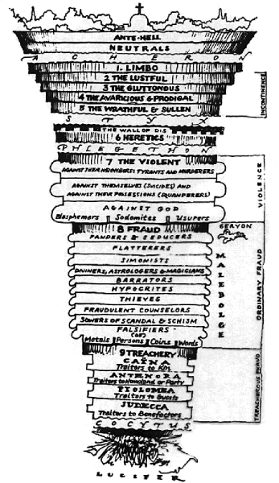

Although code can be generated by other code (metaprogamming), programs generally don’t change their own code as they run; this has the potential to devolve into a mess of difficult-to-track changes. However, some languages do allow programs to alter their own script as it ran, such as with COBOL’s ALTER command.
If the program were to alter its code and then hit this altered code multiple times, it’s possible that the resulting instruction would be different each time. This is different from, say, improvising in jazz, where one works off an existing score and alters it or interprets it in a new way. Self-modification is more like a character in a stage production who, still in character, gets to a a scene that asks her to get ahold of the script of the play itself and to start makes changes to it. She continues to follow the script, only the script tells her to change lines she hasn’t arrived at yet, and when she gets up to that part of the script, it may ask her to make even more changes, leading to all kinds of unexpected places. The difference between this and the jazz example is that the character is never breaking from the script, but her behavior is making the script evolve. This can lead to all kinds of confusing situations and is usually avoided in programming.
The brilliant Malbolge esolang was created in 1998 (very early in esolang history) by Ben Olmstead. Malbolge was designed to be the most difficult language to program in. Not surprisingly, it uses self-modification as one of its tools to do this. After each command is run in Malbolge, it “encrypts” itself, changing to the same command mod 94 (each command is an encoded number). Many of the resulting commands do nothing, but some are functional. A command that does one thing the first time its run will always be different the second time. Malbolge plays off the twin histories of computer science and encryption — computer science after all, was advanced and first formalized by Turing and others concerned with encryption — a computer is an encrypting tool. Fittingly, the first programs written for Malbolge were created by treating it as a form of encryption. Rather than attempting to work out the logic of the language, they used experimentation and brute force.
ChromaticInfestation seq2 from Daniel Temkin on Vimeo.
In Malbolge’s case, the self-modification is only to the program in memory, not to the program on disk. The next time you open that Malbolge program, it will look the same as it did when originally written. This is not necessarily the case in all self-modifying languages. Zajal, a language created by Ramsey Nasser, was designed to pick up changes in the source file as it runs. Zajal is Processing-like, in that the main activity of a Zajal program is in one long loop, similar to Processing’s draw(). Because Zajal is designed to support visual programs, Nasser wanted to allow the user to muck with code in that loop and see the changes reflected immediately, rather than going through the whole start up process each time.
As an unintentional side-effect of this, it opens the door to Zajal programs that alter their own code and have those changes reflected in the running program. I experimented with this in my program Chromatic Infestation, which continually scans its own source code, drawing words beginning with “r” as red circles, “g” as green circles, and “b” as blue. Each of the three colors are at war and inject the program with lines of code meant to increase the amount of their color on screen, until the program gets overwhelmed (in about two hours), at which point it resets. All the while, the new lines of code are printing random things to the screen.
Theoretically, there’s no reason we couldn’t create a Zajal program which would continue to mutate over a very long period, altering its own instructions as it runs and developing new behaviors.
UPDATE: I’ve corrected the first paragraph, previously was misleading / didn’t clarify generation of code from self-updating scripts